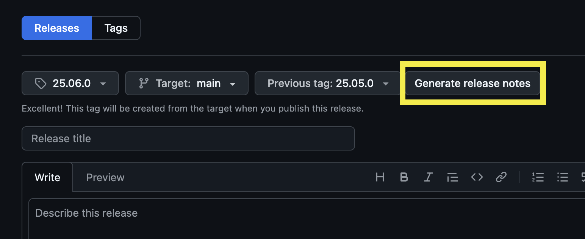

Release and Deployment
Currently the scicat-ingestor is not deployed to any package indexing services, like pypi or anaconda.
It is expected to be installed from the source code, which is available from the github repository.
TL;DR - Releasing scicat-ingestor
- Publish and tag the main branch with the version number.
- Deploy new documentation from the release.
Release Steps
Here is instruction of release steps in detail.
1. Go to github repository releases page
2. Click Draft a new release button
3. Create a new tag (version number)
This will be the title of the release as well.
Version Format: YY.MM.x
YY: Last two digits of the current yearMM: Current month in two digitsx: Patch version number of the current month. If it is the first version of this month, it should be0and if it is the second version of the month, it should be1and so on...
4. Select previous tag
Select the previous tag to compare the current version.
Note
Finding previous tag automatically by setting it to auto does not work currently.

5. Generate release notes
Click the Generate release notes button to generate release notes.
Then it creates release notes based on the PR merges.

6. Edit release notes
Generate release notes button will create the release title and the notes based on the
PRs that have been merged since the previous tag you selected.
Under What's Changed notes, we can typically remove Bump PRs by dependabot or copier update.
You can add more notes if needed.

7. Publish release
Click the Publish release button to publish the release.
8. Check the documentation
Publishing the release should trigger the documentation build/deploy action.
Note
This action might fail due to various reasons so please check if it is deployed correctly by checking the action status or the documentation url.
Warning
This release action is not directly connected to the scicat-ingestor deployment
at the ESS infrastructure.
There is a separate CI/CD pipeline that pulls the latest release of scicat-ingestor.
9. 🎉 New release of the scicat-ingestor 🎉
The new release will look similar to this: